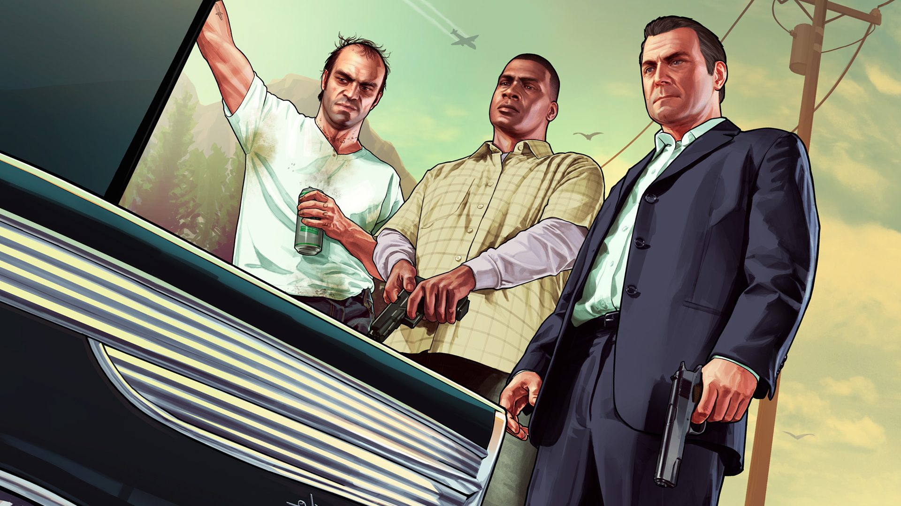

Red Dead Redemption 2

Historia: Ambientado en 1899, el juego sigue a Arthur Morgan, miembro de la pandilla de forajidos Van der Linde, mientras lucha por sobrevivir en un mundo en transformación. La historia gira en torno a la caída de los forajidos mientras se enfrentan a la ley y sus propios conflictos internos.
Jugabilidad: Mundo abierto con énfasis en la narrativa, interacción profunda con el entorno, misiones secundarias, caza, y un sistema de honor. El juego también incluye un modo multijugador, Red Dead Online, donde los jugadores pueden crear su propio personaje y explorar el mundo con otros usuarios.
Premios: Ganador del Juego del Año en múltiples ceremonias, incluyendo los Game Awards 2018. Fue aclamado por su historia, gráficos, jugabilidad y diseño del mundo.
Grand Theft Auto V
Historia: Situado en la ciudad ficticia de Los Santos, GTA V sigue a tres protagonistas: Michael, Trevor y Franklin, cuyas vidas criminales se entrelazan en un caótico ciclo de violencia, traiciones, y robos. El juego presenta una narrativa interconectada con la posibilidad de cambiar entre los personajes.
Jugabilidad: Mundo abierto, con la libertad de realizar una gran variedad de actividades, como misiones principales, carreras, enfrentamientos armados y otras actividades de ocio. El juego también cuenta con Grand Theft Auto Online, donde los jugadores pueden construir imperios criminales junto a otros jugadores.
Premios: Uno de los juegos más vendidos de todos los tiempos, GTA V ha recibido numerosos premios por su jugabilidad, innovación técnica y diseño de mundo abierto. Ha ganado varios premios a Mejor Juego y ha mantenido una comunidad activa durante años gracias a sus actualizaciones constantes.